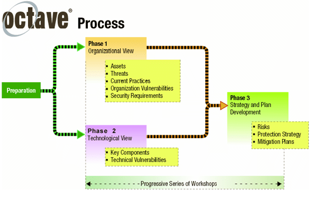

1. Introduction
The organisation has decided to expand its presence in the digital realm, recognising its many benefits. Among these is the ability to tap into new global markets and establish a dynamic global supply chain, enhanced business efficiencies and decreased costs. Additionally, this move opens exciting new avenues for sourcing alternative materials and labour from the regions (Champion, 2019; Williams, 2019).
According to Tighe (2023), online sales account for 43% of overall sales in the United States, with the UK and Sweden following at 35%. However, certain countries still demonstrate a preference for offline shopping. Presently, more e-commerce transactions are being carried out via social media, with 70% of direct purchases made by Millennials (aged 27-42) and 52% by Gen Z (aged 18-26), emphasising the potential of establishing an online store with a solid social media presence to enhance sales (Chevalier, 2024).
The supply chain is subject to diverse legal frameworks that vary across regions, creating a challenging environment for efficient management. The association of multiple stakeholders in the supply chain exacerbates the difficulty of monitoring and maintaining quality, leading to potential visibility issues. Moreover, the supply chain is susceptible to cyber threats, which could severely disrupt operations, resulting in reputational damage and financial losses (GEP, 2022; Kumar, 2024).
This report reviews qualitative risk assessment methodologies to identify potential risks within the business supply chain using OCTAVE-S, a methodology tailored for small businesses and characterised by a simple structure. OCTAVE-S places great emphasis on operational risk and security practices. An added advantage of OCTAVE-S is its ability to leverage the knowledge of internal employees and implement the organisation's security practices efficiently and effectively, thereby enhancing cybersecurity. (Alberts et al., 2003; Alberts et al., 2005; Naik et al., 2022; SecurityScorecard, 2023).
The report shall carefully explicate the concept of quantitative risk assessment by leveraging Monte Carlo Simulation to derive the risk proportion within the organisation's supply chain and system infrastructure. This pragmatic approach employs mathematical models to estimate a hypothetical outcome of any plausible event. Monte Carlo Simulation generates random numbers to predict probabilities within a set number of iterations to help manage risks. The more simulations, the more accurate the predictions. (Harrison, 2010; Kenton, 2023; Kwiatkowski, 2022; Lutkevich, 2023; Olson and Wu, 2020).
All organisations must have a well-planned business continuity plan (BCP) and disaster recovery (DR) plan during a cyber incident. According to Andrade et al. (2017), nearly 50% of businesses that experience a disaster, such as a massive data loss, tend to cease operations within two years, posing a daunting challenge for the organisation. Hence, businesses must prepare and implement a comprehensive BCP and DR plan to mitigate potential cyber threats. This, in turn, will facilitate the continuity of business operations with minimal disruption, thereby making it a critical element for all businesses (Gillis et al., 2023).
2. Risk Assessment
2.1. Digital store and supply chain flow chart
To understand the global supply chain of a business operation, it is imperative to delve into the intricacies of its local and international structure and operations. Figure 1 illustrates the basic structure of a B2C eCommerce store with a global supply chain. To accommodate the diverse requirements of its international clientele, the organisation can implement a website localisation strategy customised to each region's linguistic and cultural peculiarities. As a result, all orders these clients place will be fulfilled from a warehouse within their geographical area of operation. Access to storage data will be restricted based on designated roles to prevent potential data misuse.
Figure 1: Flow chart of the current digital structure with a global supply chain linked to the main continent, excluding Antarctica, created using Miro (2019) (Bernhart, 2020; Britannica, 2023; N, 2024).
2.2. OCTAVE-S risk assessment overview
OCTAVE-S means Operationally Critical Threat, Asset, and Vulnerability Evaluation, Small organisations with an employee range of 20 to 80 individuals. Although the organisation under consideration has a global distribution chain, it is in the nascent stages of worldwide expansion. The OCTAVE-S methodology scrutinises the organisation and its system to determine how individuals utilise their systems. A handful of organisation employees are entrusted with conducting a qualitative and operational risk assessment. Figure 2 depicts the OCTAVE process, broken into three phases and presented in a tabular format (Alberts et al., 2003; Caralli et al., 2018).
Figure 2: OCTAVE process for risk assessment (Alberts et al., 2003)
2.3. OCTAVE-S Summary
Warehousing and storage facilities are susceptible to vulnerabilities, including theft, internal malfunctions, and natural disasters. Considering possible cyber threats, fortifying data storage mechanisms and restricting access privileges are significant. The discourse posits that countering these risks necessitates engaging the services of a reputable security firm, appointing a dedicated manager for upkeep and insured contents, and implementing security measures such as firewalls, antivirus software, and EDR to isolate threats. The discourse underscores the importance of safeguarding warehousing and storage facilities against diverse vulnerabilities to ensure uninterrupted and secure operations.
2.4. Monte Carlo Simulation
This technique uses random numbers to predict outcomes. Running more simulations improves accuracy, making it ideal for managing risks. Multiple iterations are needed to assess risks in the Pampered Pets supply chain. Any disruption could impact product quality, making risk assessment crucial.
According to Olson and Wu (2020), stock loss, low demand, and market changes owing to competition are some of the fundamental supply chain risks that can potentially lead an organisation to insolvency due to the significant amount of cash tied up in stock. However, Heckmann et al. (2015) contend that the complexity and uncertainty within supply chain operations have risen, posing challenges to predictability. These uncertainties include natural disasters such as Hurricane Katrina in 2005, ash clouds in 2010 due to the eruption of Eyjafjallajökull, and earthquakes in Japan that occurred on New Year's Day in 2024. (Britannica, 2018; CAA, 2010; Davies, 2010; Kyung Hoon et al., 2024).
The simulation process is split into two sections for a broad analysis. The first section examines the study of natural disasters in the global economy, while the second simulation is focused on evaluating the principal risks in the global business landscape.
Figure 3.1: Monte Carlo Simulation on global natural disasters in economic losses, created on Microsoft Excel, data taken from statista.com (Microsoft Excel, 2016; Salas, 2024; SoftTech Tutorials, 2020; Winslow, 2018).
The data shown in Figure 3.1 indicates that the global economic loss caused by natural disasters in 2023 was dominated by earthquakes, which resulted in losses amounting to a staggering $99 billion (Salas, 2024). Earthquakes pose a significant issue. According to Pfeiffer's (2024) research, the UK had 39 documented occurrences with a magnitude of up to 3.3. However, the most substantial seismic event in 2023 was a magnitude of 7.8, which struck the southern border of Türkiye (Livemint, 2023).
Severe storms have also resulted in a substantial economic loss of $94 billion globally. The Met Office (2024) report highlights the formidable challenge of predicting storms as they do not exhibit any discernible patterns in gust speeds; the North Atlantic regions have also substantiated this research. Natural disasters such as flooding, drought, tropical cyclones, winter weather, and European windstorms have resulted in a global economic loss of $380 billion.
The data illustrated in Figure 3.1 underscores the deleterious impact of natural disasters on the global economy, which, in turn, engenders perturbations in the global supply chain and the overall quality of goods produced. Earthquakes, for example, have been shown to cause significant losses. They not only harm the warehouses that stockpile the produce, leading to stock losses and unfulfilled orders but also impair the raw materials required to manufacture these items, ultimately culminating in a shortage of inventory and future growth for the organisation.
Figure 3.2: Monte Carlo Simulation on global natural disasters, which shows the histogram of the Standard Deviation (STDEV) created on Microsoft Excel (Microsoft Excel, 2016)
Figure 3.3: Monte Carlo Simulation on global natural disasters, showing the Average, Max, and Min. The summarized data indicates that the maximum value on the graph denotes a threshold beyond which the likelihood of natural disasters, including earthquakes, severe storms, flooding, or drought, surpasses 50%. This, in turn, implies a heightened risk of severe economic damage on a global scale. Created on Microsoft Excel (Microsoft Excel, 2016)
Figure 3.4: Monte Carlo Simulation on leading risk to global business in 2023. The data utilises the Bernoulli distribution, which models situations with two possible outcomes. The formula used for Bernoulli distribution =SQRT(p*(1- p)). The standard deviation (STDEV) is then calculated by randomising the data. The simulation was created using Microsoft Excel, with data from statista.com (King, 2020; Microsoft Excel, 2016; Rudden, 2023; SoftTech Tutorials, 2020; Statisticshowto.com, n.d.; Winslow, 2018).
The data shown in Figure 3.4 highlights that cyber incidents are the preeminent cause of disruption in the global business arena. Cyber incidents can manifest in various forms, such as malware, ransomware attacks, and data breaches, often resulting in substantial financial penalties. According to Rudden (2022), the global cyber insurance market is poised to witness exponential growth, with an estimated worth of $22 billion and an anticipated doubling rate by 2025. Cyber insurance, as an instrument of risk management, aims to safeguard businesses from various cyber threats that emanate from both technological and operational domains.
Organisations are increasingly vulnerable to cyber-attacks that have the potential to cause substantial disruption to their supply chains. These attacks may lead to a breakdown in order fulfilment, inventory and supplies management, and internal system access, ultimately resulting in a complete standstill. Furthermore, such attacks may expose an organisation's partners and stakeholders, causing reputational damage and negatively impacting future investments. Additionally, organisations may continue to incur costs from suppliers’ various holdings, such as insurance and rentals (Infoshare Systems, Inc., 2023; Olson and Wu, 2020)
Figure 3.5: Monte Carlo Simulation on leading risk to global business in 2023, which shows the histogram of the Standard Deviation (STDEV) created on Microsoft Excel (Microsoft Excel, 2016)
Figure 3.6: Monte Carlo Simulation on leading risk to global business in 2023, showing the Average, Max, and Min. The graph's maximum value, which surpasses the 50% threshold, indicates a considerable likelihood for businesses to encounter many risks, including cyberattacks and macroeconomic perturbations such as inflation. The chart was created using Microsoft Excel (Microsoft Excel, 2016)
3. Business Continuity / Disaster Recovery (DR)
Business Continuity and Disaster Recovery are often conflated and called BCDR, yet they are distinct concepts. Organisations must have a comprehensive plan to ensure the continuity of their operations in the event of a cyber incident, man-made occurrence, or natural disaster by recovering their infrastructure for business continuity. This plan must account for backup systems, data recovery procedures, and a comprehensive strategy to mitigate the impact of any disruptions. Failure to have such a plan in place could result in severe consequences for the organisation and its stakeholders (Gillis et al., 2023; Nugent, 2023; Moore, 2022; Siddiqui, 2024).
The implementation of Disaster Recovery as a Service (DRaaS) is an indispensable measure for organisations aiming to secure swift and uninterrupted access to their data and applications while ensuring customers' experience remains unscathed. DRaaS is a cloud-based service that operates by replicating the organisation's current system, data, and infrastructure, which is subsequently encrypted and transferred to a remote third-party cloud environment, functioning in parallel with the organisation's current live site. DRaaS provides several benefits: scalability, cost-effectiveness, compliance with regulatory standards, and data security assurance (Flinders and Smalley, 2023; Gillis et al., 2023).
It is often observed that vendors, through their products, create a barrier that hinders organisations from switching to another vendor, thus creating a monopolistic effect on the market. This phenomenon is known as vendor lock-in and can impact the market negatively. However, by adopting a hybrid solution, organisations can effectively mitigate the risk of vendor lock-in. This approach allows organisations to select add-ons from various cloud vendors, be they public, private, or on-premises, and customise their disaster recovery solution to meet their specific needs without being constrained to a single vendor. Additionally, a hybrid solution guarantees a swift recovery, analogous to a DRaaS solution (Carroll, 2023; CloudComputing.Media, 2023; Cloudflare, 2024).
4. Conclusion
Establishing an online presence with a global supply chain can enhance a company's sales, performance, and overall brand recognition. However, this strategy has inherent risks, necessitating careful consideration of the associated challenges.
Warehousing and storage facilities are subject to various vulnerabilities, including cyber incidents, malfunctions, theft, and natural disasters. To address these risks, it is essential to implement robust data storage mechanisms while also restricting access privileges. Warehouses should use reputable security agencies, appoint a dedicated manager for upkeep and insured contents, and apply appropriate system security measures, such as firewalls, antivirus software, and EDR, to isolate potential threats. Also, the European Union’s GDPR states that data transfer outside the EU must ensure adequate measures are taken to protect data (European Commission, n.d.). Training staff to understand data protection and recognise phishing emails is crucial.
In the event of a calamity, having a well-structured recovery plan is imperative for businesses to maintain uninterrupted operations with minimal impact on their customers. A hybrid solution offers a practical disaster recovery approach, facilitating systems' swift restoration without impacting customers and not being bound to a single vendor.